건설재료시험기사 (2013-03-10 기출문제)
1과목: 콘크리트공학
1. 한중(寒中) 콘크리트에 사용하는 재료에 대한 설명으로 옳지않은 것은?
- 한중 콘크리트에는 AE 콘크리트를 사용하는 것을 원칙으로 한다.
- 물-결합재비는 원칙적으로 60%이하로 한다.
- 골재는 시트 등으로 덮어서 동결이 방지 되도록 저장해야 한다.
- 시멘트는 냉각되지 않도록 하고, 사용시 직접 가열하여 온도 저하를 방지하는 것이 좋다.
(정답률: 84%)

2. 콘크리트의 압축강도를 시험하여 슬래브 및 보 밑면의 거푸집과 동바리를 떼어낼 때 콘크리트 압축강도 기준값으로 옳은 것은?
- 설계기준강도×1/3이상, 14Mpa이상
- 설계기준강도×2/3이상, 14Mpa이상
- 설계기준강도×1/3이상, 10Mpa이상
- 설계기준강도×2/3이상, 10Mpa이상
(정답률: 81%)
3. 단위 골재량의 절대부피가 800ℓ인 콘크리트에서 잔골재율(S/a)이 40%이고, 굵은 골재의 표건밀도가 2.65g/cm3이면, 단위 굵은골재량은 얼마인가?
- 848kg
- 1,272kg
- 1,044kg
- 2,120kg
(정답률: 70%)
4. 벽 또는 기둥과 같은 높이가 높은 콘크리트를 연속해서 타설할 경우 콘크리트를 쳐 올라가는 속도로서 가장 적당한 것은?
- 30분에 0.5~1m 정도
- 30분에 1~1.5m 정도
- 30분에 1.5~2m 정도
- 30분에 2~2.5m 정도
(정답률: 74%)
5. 콘크리트 구조물의 전자파레이더법에 의한 비파괴시험에서 진공 중에서 전자파의 속도를 C, 콘크리트의 비유전율을 εr이라 할 때 콘크리트 내의 전자파의 속도 V를 구하는 식으로 맞는 것은?
- V=Cㆍεr(m/s)
- V=C/εr(m/s)
- V=Cㆍ√εr(m/s)
- V=C/√εr(m/s)
(정답률: 55%)
6. 프리스트레스트 콘크리트에서 프리스트레싱 할 때의 사항으로 틀린 것은?
- 긴장재는 이것을 구성하는 각각의 PS강재에 소정의 인장력이 주어지도록 긴장하여야 한다.
- 긴장재를 긴장할 때 정확한 인장력이 주어지도록 하기 위해 인장력을 설계값 이상으로 주었다가 다시 설계값으로 낮추는 방법으로 시공하여야 한다.
- 긴장재에 대해 순차적으로 프리스트레싱을 실시할 경우는 각 단계에 있어서 콘크리트에 유해한 응력이 생기지 않도록 하여야 한다.
- 프리텐션 방식의 경우 긴장재에 주는 인장력은 고정장치의 활동에 의한 손실을 고려하여야 한다.
(정답률: 91%)
7. 일반 콘크리트 치기에 대한 설명으로 틀린 것은?
- 콘크리트 타설 도중 표면에 떠올라 고인 블리딩수가 있을 경우는 콘크리트 표면에 도랑을 만들어 물을 제거한 후 콘크리트를 타설 해야 한다.
- 한 구획 내의 콘크리트 타설이 완료될 때 까지 연속해서 타설해야 한다.
- 콘크리트는 그 표면이 한 구획 내에서는 거의 수평이 되도록 타설하는 것을 원칙으로 한다.
- 타설한 콘크리트를 거푸집 안에서 횡방향으로 이동시켜서는 안 된다.
(정답률: 93%)
8. 매스 콘크리트를 시공할 때 온도균열 대한 검토는 온도균열지수에 의해 평가한다. 다음의 조건에서 재령 28일에서의 온도균열지수는? (단, 보통 포틀랜드 시멘트를 사용한 경우)
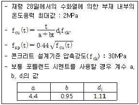
- 0.8
- 1.0
- 1.2
- 1.4
(정답률: 57%)
9. 압력법에 의한 굳지 않은 콘크리트의 공기량시험(KS F 2421)중 물을 붓고 시험하는 경우(주수법)의 공기량 측정 용량은 최소 얼마 이상으로 하는가?
- 3L
- 5L
- 7L
- 9L
(정답률: 71%)
10. 현장의 골재에 대한 체분석 결과 잔골재 속에 5mm체에 남는 것이 4%, 굵은골재 속에 5mm체를 통과하는 것이 10%였다. 시방배합표상의 단위 잔골재량은 643kg/m3이며, 단위 굵은골재량은 1212kg/m3이다. 현장 배합을 위한 단위 잔골재량은 얼마인가?
- 532kg/m3
- 588kg/m3
- 613kg/m3
- 637kg/m3
(정답률: 66%)
11. 콘크리트 압축강도 평가에 대한 설명 중 올바르지 않은 것은?
- 재하속도가 빠를수록 압축강도는 높게 평가된다.
- 모양이 다르면 크기가 작은 공시체의 압축강도가 높게 평가된다.
- 공시체 직경 또는 한 변의 길이(D)와 높이(H)의 비(H/D)가 동일하면 원주형 공시체가 각주형 공시체보다 압축강도는 작게 평가된다.
- 원주형과 각주형 공시체는 직경 또는 한변의 길이(D)와 높이(H)의 비(H/D)가 작을수록 압축강도는 높게 평가된다.
(정답률: 78%)
12. 잔골재율에 대한 설명 중 틀린 것은?
- 골재 중 5mm체를 통과한 부분을 잔골재로 보고, 5mm체에 남는 부분을 굵은 골재로 보아 산출한 잔골재량의 전체 골재량에 대한 절대용적비를 백분율로 나타낸 것을 말한다.
- 잔골재율이 어느 정도보다 작게 되면 콘크리트가 거칠어지고, 재료분리가 일어나는 경향이 있다.
- 잔골재율은 소요의 워커빌리티를 얻을 수 있는 범위에서 단위수량이 최대가 되도록 한다.
- 잔골재율을 작게 하면 소요의 워커빌리티를 얻기 위한 단위수량이 감소되고 단위시멘트량이 적게 되어 경제적이다.
(정답률: 68%)
13. 프리스트레스트 콘크리트에 대한 설명 중 잘못된 것은?
- 굵은골재 최대치수는 보통의 경우 25mm를 표준으로 한다.
- 팽창성 그라우트의 재령 28일 압축강도는 최소 25MPa 이상이어야 한다.
- 프리텐션 방식에서는 프리스트레싱할 때 콘크리트 압축강도가 30MPa 이상이어야 한다.
- 팽창성 그라우트의 팽창률은 0~10%를 표준으로 한다.
(정답률: 67%)
14. 거푸집 및 동바리 구조계산에 대한 설명중 틀린 것은?
- 고정하중은 철근 콘크리트와 거푸집의 중량을 고려하여 합한 하중이며, 콘크리트의 단위중량은 철근의 중량을 포함하여 보통 콘크리트에서는 24kN/을 적용한다.
- 목재 거푸집 및 수평부재는 집중하중이 작용하는 캔틸레버보로 검토하여야 한다.
- 고정하중과 활하중을 합한 연직하중은 슬래브 두께에 관계없이 최소 5.0이상을 고려하여 거푸집 및 동바리를 설계하여야 한다.
- 활하중은 구조물의 수평투영면적(연직 방향으로 투영시킨 수평면적)당 최소 이상으로 하여야 한다.
(정답률: 78%)
15. 압축강도에 의한 콘크리트의 품질검사에서 판정 기준으로 옳은 것은? (단, 설계기준 압축강도로부터 배합을 정한 경우로서 fck＞35MPa인 콘크리트 이며 콘크리트 표준시방서 규정을 따른다.)
- - 연속3회 시험값의 평균이 fck의 95%이상
- 1회 시험값이 의 90%이상 - - 연속 3회 시험값의 평균이(fck-3.5MPa)이상
- 1회 시험값이 의 95%이상 - - 연속 3회 시험값의 평균이 fck이상
- 1회 시험값이 (fck-3.5MPa)이상 - - 연속 3회 시험값의 평균이 fck이상
- 1회 시험값이 의 90%이상
(정답률: 74%)
16. 프리플레이스트 콘크리트에 대한 일반적인 설명으로 틀린 것은?
- 잔골재의 조립률은 1.4~2.2의 범위로 한다.
- 굵은골재의 최소치수는 15mm이상으로 하여야 한다.
- 대규모 프리플레이스트 콘크리트를 대상으로 할 경우 굵은골재의 최소치수를 작게 하는 것이 좋다.
- 굵은골재의 최대치수와 최소치수와의 차이를 적게 하면 굵은골재의 실적률이 적어지고 주입 모르타르의 소요량이 많아진다.
(정답률: 74%)
17. 해양 콘크리트의 시공에서 콘크리트가 충분히 경화되기 전에 해수에 씻기면 모르타르 부분이 유실되는 등 피해를 받을 우려가 있으므로 직접 해수에 닿지 않도록 보호하여야 한다. 이렇게 보호하여야 하는 기간에 대한 설명으로 옳은 것은?
- 혼합시멘트를 사용한 경우는 설계기준 압축강도의 60% 이상의 강도가 확보될때까지 보호하여야 한다.
- 보통 포틀랜드 시멘트를 사용한 경우는 대개 10일간 보호하여야 한다.
- 혼합시멘트를 사용한 경우는 설계기준 압축강도의 50%이상의 강도가 확보될 때까지 보호하여야 한다.
- 보통 포틀랜드 시멘트를 사용한 경우는 대개 5일간 보호하여야 한다.
(정답률: 68%)
18. 콘크리트의 휨강도 시험에 대한 설명으로 틀린 것은?
- 지간은 공시체 높이의 3배로 한다.
- 재하장치의 설치면과 공시체면과의 사이에 틈새가 생기는 경우 접촉부의 공시체 표면을 평평하게 갈아서 잘 접촉할 수 있도록 한다.
- 공시체에 하중을 가하는 속도는 가장자리 응력도의 증가율이 매초 0.6±0.4MPa이 되도록 한다.
- 공시체가 인장쪽 표면의 지간 방향 중심선의 3등분점의 바깥쪽에서 파괴된 경우는 그 시험결과를 무효로 한다.
(정답률: 77%)
19. 숏크리트의 특징에 대한 설명으로 틀린 것은?
- 임의 방향으로 시공이 가능하나 리바운드 등의 재료손실이 많다.
- 용수가 있는 곳에서도 시공하기 쉽다.
- 노즐맨의 기술에 의하여 품질, 시공성 등에 변동이 생긴다.
- 수밀성이 적고 작업 시에 분진이 생긴다.
(정답률: 89%)
20. 콘크리트의 균열은 재료, 시공, 설계 및 환경등 여러 가지 요인에 의해 발생한다. 다음 중 재료적 요인과 가장 관련이 많은 균열 현상은?
- 알칼리 골재반응에 의한 거북등 현상의 균열
- 온도변화, 화학작용 및 동결융해 현상에 의한 균열
- 콘크리트 피복두께 및 철근의 정착길이 부족에 의한 균열
- 재료분리, 콜드 조인트(cold joint)발생 에 의한 균열
(정답률: 90%)
2과목: 건설시공 및 관리
21. 토량의 변화율이 L=1.2, C=0.9일 때, 보통 흙으로 45000m3의 성토를 하고자 한다. 운반하여야 할 토량은?
- 33,750m3
- 45,000m3
- 54,000m3
- 60,000m3
(정답률: 77%)
22. 아스팔트 콘크리트 포장과 비교한 시멘트 콘크리트 포장의 특성에 대한 설명으로 틀린 것은?
- 내구성이 커서 유지관리비가 저렴하다.
- 표층은 교통하중을 하부층으로 전달하는 역할을 한다.
- 국부적 파손에 대한 보수가 곤란하다.
- 시공 후 충분한 강도를 얻는 데까지 장시간의 양생이 필요하다.
(정답률: 79%)
23. 교량구조 중 좌우의 주형을 연결하여 구조물의 횡방향지지 및 강성을 확보, 횡하중의 받침부로 원활한 하중 전달을 하기 위해 설치된 구조는 무엇인가?
- 브레이싱
- 교대
- 바닥틀
- 구체
(정답률: 77%)
24. 토적곡선(mass curve)에 대한 설명 중 틀린 것은?
- 동일 단면 내의 절토량, 성토량은 토적곡선에서 구할 수 있다.
- 평균 운반거리는 절토량 2등분 선상의 점을 통하는 평행선과 나란 한 수평거리로 표시한다.
- 절토구간의 토적곡선은 상승곡선이 되고 성토구간의 토적곡선은 하향곡선이 된다.
- 곡선의 최대값을 나타내는 점은 절토에서 성토로 옮기는 점이다.
(정답률: 63%)
25. 15t의 덤프트럭에 1.2m3의 버킷을 갖는 백호로 흙을 적재하고자 한다. 흙의 단위중량이 1.7t/m3이고, 토량변화율 L=1.25이고, 버킷계수가 0.9일 때 트럭 1대당 백호 적재횟수는?
- 7회
- 9회
- 11회
- 13회
(정답률: 61%)
26. 다음 중 흙의 지지력 시험과 직접적인 관계가 없는 것은?
- 평판재하시험
- CBR 시험
- 표준관입시험
- 정수위 투수시험
(정답률: 66%)
27. 암석발파공법에서 1차발파 후에 발파된 원석의 2차발파공법으로 주로 사용되는 것이 아닌 공법은?
- 프리스프리팅 공법
- 블록 보링 공법
- 스네이크 보링 공
- 머드 캐핑 공법
(정답률: 65%)
28. 다음표와 같은 조건에서의 불도저 운전1시간당의 작업량(본바닥 토량)은?
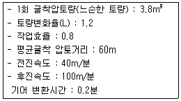
- 66.09m3/h
- 73.26m3/h
- 78.77m3/h
- 85.38m3/h
(정답률: 65%)
29. 전압 장비 중 2축 3륜 형식으로 자갈, 쇄석의 포장 기층의 다짐에 효과적인 장비는?
- 탬핑 롤러
- 타이어 롤러
- 머캐덤롤러
- 탠덤 롤러
(정답률: 62%)
30. 발파에서 폭약의 중심에서부터 자유면까지의 최단거리를 무엇이라 하는가?
- 누두공
- 최소저항선
- 누두반경
- 임계심도
(정답률: 82%)
31. 아스팔트 포장의 시공에 앞서 실시하는 시험 포장의 결과로 얻어지는 사항과 관계가 없는 것은?
- 혼합물의 현장배합 입도 및 아스팔트 함량의 결정
- 플랜트에서의 작업표준 및 관리목표의 설정
- 시공관리 목표의 설정
- 포장두께의 결정
(정답률: 63%)
32. 폭우 시 옹벽 배면에 배수시설이 취약하면 옹벽저면을 통하여 침투수의 수위가 올라간다. 이 침투수가 옹벽에 미치는 영향을 설명 한 것 중 옳지 않은 것은?
- 활동면에서의 간극수압 증가
- 부분포화에 따른 뒷채움 흙무게의 증가
- 옹벽 바닥면에서의 양압력 증가
- 수평저항력의 증가
(정답률: 77%)
33. 옹벽의 안정상 수평 저항력을 증가시키기 위한 방법으로 가장 유리한 것은?
- 옹벽의 비탈경사를 크게 한다.
- 옹벽의 저판 밑에 돌기물(key)을 만든다.
- 옹벽의 전면에 apron을 설치한다.
- 배면의 본바닥에 앵커 타이(ancohr tie)나 앵커벽을 설치한다.
(정답률: 85%)
34. 도로를 신설할 때 실시하는 토질조사 중 보링(boring)에 대한 설명으로 틀린 것은?
- 토층이 변화하는 곳에는 보링의 간격을 줄인다.
- 기복이 심한 장소에는 절토와 성토 중에서 성토부분에만 보링을 실시한다.
- 토층의 단면이 균일하면 보링의 간격을 늘려도 된다.
- 보링의 간격은 토층 단면의 균일성, 지형 조건에 따라 달리한다.
(정답률: 76%)
35. 다음은 어떤 공사의 품질관리에 대한 내용이다. 가장 먼저 해야 할 일은?
- 품질특성의 선정
- 작업표준의 결정
- 관리한계 설정
- 관리도의 작성
(정답률: 81%)
36. 성토 재료의 요구조건으로 틀린 것은?
- 비탈면의 안정에 필요한 전단강도를 보유할 것
- 투수계수가 작을 것
- 압축성, 흡수성이 클 것
- 성토 후 압밀침하가 작을 것
(정답률: 73%)
37. 말뚝기초의 부마찰력의 감소 방법으로 틀린 것은?
- 표면적이 작은 말뚝을 사용하는 방법
- 단면이 하단으로 가면서 증가하는 말뚝을 사용하는 방법
- 선행하중을 가하여 지반침하를 미리 감소하는 방법
- 말뚝직경보다 약간 큰 케이싱을 박아서 부마찰력을 차단하는 방법
(정답률: 62%)
38. 자연함수비 8%인 흙으로 성토하고자 한다. 다짐한 흙의 함수비를 14%로 관리하도록 규정하였을 때 매층마다 1m2당 몇 kg의 물을 살수해야 하는가?(단, 1층의 다짐 후 두께는 20cm이고, 토량 변화율 C=0.9이며, 원지반상태에서 흙의 단위중량은 1.8t/m3이다.)
- 7.15kg
- 15.84kg
- 25.93kg
- 22.22kg
(정답률: 56%)
39. 댐 공사 시 가체절공 중 가장 간단한 구조형식으로 얕은 수심에는 유리하지만 수심에 비하여 넓은 부지, 상당한 양의 토사가 필요한 가체절공은?
- 간이 가체절공
- 셀식 가체절공
- 흙댐식 가체절공
- 한겹 흙물막이 가체절공
(정답률: 64%)
40. 공정관리법 가운데 CPM에 대한 설명으로 옳은 것은?
- 최소비용에 관련된 이론이 없다.
- 경험이 없는 사업에 적용한다.
- 활동 중심의 일정 계산을 한다.
- 3점 추정방법으로 공기를 추정한다.
(정답률: 68%)
3과목: 건설재료 및 시험
41. 다음 석재 중 조직이 균일하고 내구성 및 강도가 큰 편이며, 외관이 아름다운 장점이 있는 반면 내화성이 작아 고열을 받는 곳에는 적합하지 않은 것은?
- 응회암
- 화강암
- 현무암
- 안산암
(정답률: 83%)
42. 목재의 강도 중 가장 큰 것은?
- 섬유에 평행방향의 압축강도
- 섬유에 직각방향의 압축강도
- 섬유에 평행방향의 인장강도
- 섬유에 평행방향의 전단강도
(정답률: 73%)
43. 골재의 조립률 시험에 사용되는 10개의 체규격에 해당되지 않는 것은?
- 25mm
- 10mm
- 1.2mm
- 0.6mm
(정답률: 66%)
44. 콘크리트용 잔골재에 대한 설명 중 옳은 것은?
- 절대건조밀도는 2.50g/cm3이하의 값을 표준으로 한다.
- 흡수율은 3.0%이하의 값을 표준으로 한다.
- 염화물(NaCl환산량)함유량의 허용값은 질량 백분율로 0.06% 이하이어야 한다.
- 점토 덩어리 함유량의 허용값은 질량 백분율로 2.0% 이하이어야 한다.
(정답률: 62%)
45. 화약류 취급 시 주의사항을 설명한 것으로 틀린 것은?
- 뇌관과 폭약은 같은 장소에 두어야 한다.
- 운반 시 화기나 충격을 받지 않도록 하여야 한다.
- 다이너마이트는 직사광선을 피하고 화기에 접근시키지 말아야 한다.
- 장기 보관 시는 온도에 의해 변질되지 않고 수분을 흡수하여 동결되지 않도록 해야 한다.
(정답률: 81%)
46. 동일 시험자가 동일 시멘트에 대해 2회의 시멘트 비중시험을 실시한 결과가 다음의 표와 같을 때 이 시멘트의 비중은?
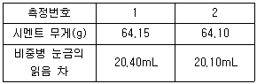
- 평균값인 3.17을 시멘트의 비중값으로 한다.
- 두 시험 중 작은 값인 3.14를 시멘트의 비중값으로 한다.
- 2회 측정한 결과가 보다 크므로 재 시험을 실시한다.
- 2회 측정한 평균값과 ±0.02이상 차이나는 시험결과가 있으므로 재시험을 실시한다.
(정답률: 39%)
47. 다음과 같은 합판의 제조 방법 중에서 목재의 이용효율이 높고 가장 널리 사용되는 것은?
- 로터리 베니어(rotary veneer)
- 슬라이스 베니어(sliced veneer)
- 소드 베니어(sawed veneer)
- 플라이우드(plywood)
(정답률: 59%)
48. 역청재료의 침입도 시험에서 중량 100g의 표준침이 5초 동안에 5mm관입했다면 이 재료의 침입도는 얼마인가?
- 100
- 50
- 25
- 5
(정답률: 81%)
49. 다음의 표는 어떤 혼화재료의 종류인가?
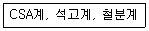
- 팽창재
- AE제
- 방수제
- 급결제
(정답률: 80%)
50. 시멘트와 관련된 내용의 연결이 잘못된 것은?
- 비카트 침(Vicat needle)-시멘트 응결시간 시험
- 수경률-시멘트 원료의 조합비
- 강열감량-시멘트의 풍화정도
- 르샤틀리에 플라스크-시멘트 분말도 시험
(정답률: 65%)
51. 암석 전체의 체적에 대한 공극의 비율을 공극률(porosity)이라고 한다. 다음 암석 중 일반적으로 공극률이 가장 큰 것은?
- 화강암
- 사암
- 응회암
- 대리석
(정답률: 69%)
52. 다음 혼화재료에 대한 설명 중 틀린 것은?
- 사용량에 따라 혼화재와 혼화제로 나뉜다.
- 콘크리트의 성능을 개선, 향상시킬 목적으로 사용되는 재료이다.
- 혼화제는 비록 1%이하의 양이 소요되지만 콘크리트의 배합 계산 시 고려해야 한다.
- 혼화재료를 사용할 때는 반드시 시험 또는 검토를 거쳐 성능을 확인하여야 한다.
(정답률: 64%)
53. 콘크리트용 골재에 사용되는 하천골재 및 육상골재 중의 미립분이 콘크리트의 품질에 미치는 영향에 대한 설명 중 틀린 것은?
- 골재 중의 미립분이 증가하면 콘크리트의 단위수량이 증가한다.
- 골재 중의 미립분이 증가하면 콘크리트의 레이턴스가 감소한다.
- 골재 중의 미립분이 증가하면 콘크리트의 블리딩이 감소한다.
- 골재 중의 미립분이 증가하면 콘크리트의 건조수축이 증가한다.
(정답률: 54%)
54. 다음 중 택코트용으로 사용하는 유화 아스팔트는?
- RS(C)-1
- RS(C)-2
- RS(C)-3
- RS(C)-4
(정답률: 71%)
55. 다음 혼화재료 중 고강도 및 고내구성을 동시에 만족하는 콘크리트를 제조하는데 가장 적합한 혼화재료는?
- 고로슬래그 미분말 1종
- 고로슬래그 미분말 2종
- 실리카 퓸
- 플라이 애시
(정답률: 70%)
56. 지오텍스타일의 특징에 관한 설명으로 틀린 것은?
- 인장강도가 크다.
- 수축을 방지한다.
- 탄성계수가 크다.
- 열에 강하고 무게가 무겁다.
(정답률: 66%)
57. 다음 중 금속재료에 대한 설명으로 잘못된 것은?
- 연성과 전성이 작다.
- 전기, 열의 전도율이 크다.
- 일반적으로 상온에서 결정형을 가진 고체로서 가공성이 좋다.
- 금속 고유의 광택이 있어 아름답다.
(정답률: 70%)
58. 역청재료의 점도를 측정하는 시험방법이 아닌 것은?
- 앵글러법
- 세이볼트법
- 환구법
- 스토머법
(정답률: 68%)
59. 시멘트 분말도가 모르타르 및 콘크리트 성질에 미치는 영향을 설명한 것으로 옳은 것은?
- 분말도가 높을수록 강도 발현이 늦어진다.
- 분말도가 높을수록 블리딩이 많게 된다.
- 분말도가 높을수록 수화열이 적게 된다.
- 분말도가 높을수록 건조 수축이 크게 된다.
(정답률: 70%)
60. 콘크리트용 굵은골재의 최대치수에 대한 설명 중 틀린 것은?
- 거푸집 양 측면 사이의 최소거리의 1/5을 초과하지 않아야 한다.
- 슬래브 두께의 1/4을 초과하지 않아야 한다.
- 개별철근, 다발철근, 긴장재 또는 덕트 사이 최소 순간격의3/4을 초과하지 않아야 한다.
- 무근 콘크리트의 경우 부재 최소치수의 1/4을 초과하지 않아야 한다.
(정답률: 50%)
4과목: 토질 및 기초
61. 압밀시험결과 시간-침하량 곡선에서 구할 수 없는 값은?
- 1차 압밀비 (rp)
- 초기 침하비
- 선행압밀 하중(Po)
- 압밀계수 (Cv)
(정답률: 42%)
62. 체적이 V=5.83cm3인 점토를 건조에서 건조시킨 결과 무게는 WS=11.26g이었다. 이 점토의 비중이 GS=2.67이라고 하면 이 점토의 수축한계값은 약 얼마인가?
- 28%
- 24%
- 14%
- 8%
(정답률: 25%)
63. 흙의 포화단위중량이 2.0t/m3인 포화점토층을 45˚ 경사로 8m를 굴착하였다. 흙의 강도계수 Cu=6.5t/m2, øu=0°,이다. 그림과 같은 파괴면에 대하여 사면의 안전율은?(단, ABCD의 면적은 70m2,이고 0점에서 ABCD의 무게중심까지의 수직거리는 5.0m이다.)
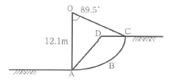
- 4.72
- 2.67
- 4.21
- 2.17
(정답률: 34%)
64. 아래 표의 설명과 같은 경우 강도정수 결정에 적합한 삼축압축 시험의 종류?
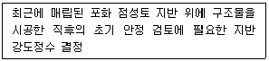
- 압밀배수 시험(CD)
- 압밀비배수 시험(CU)
- 비압밀비배수 시험(UU)
- 비압밀배수 시험(UD)
(정답률: 59%)
65. 말뚝의 부마찰력에 대한 설명 중 틀린 것은?
- 부마찰력이 작용하면 지지력이 감소한다.
- 연약지반에 말뚝을 박은 후 그 위에 성토를 한 경우 일어나기 쉽다.
- 부마찰력은 말뚝 주변침하량이 말뚝의 침하량보다 클 때 아래로 끌어내리는 마찰력을 말한다.
- 연약한 점토에 있어서는 상대변위의 속도가 느릴수록 부마찰력은 크다.
(정답률: 43%)
66. 함수비 18%의 흙 500kg을 함수비 24%로 만들려고 한다. 추가해야 하는 물의 양은?
- 80.41kg
- 54.52kg
- 38.92kg
- 25.43kg
(정답률: 40%)
67. 어떤 시료를 입도분석한 결과, 0.075mm(No.200)체 통과량이 65%이었고, 애터버그 한계 시험결과 액성한계가 40%이었으며 소성도표(Plasticity chart)에서 A선 위의 구역에 위치한다면 이 시료의 통일분류법(USCS)상 기호로서 옳은 것은?
- CL
- SC
- MH
- SM
(정답률: 49%)
68. 다음 현장시험 중 Sounding의 종류가 아닌 것은?
- 평판재하 시험
- Vane 시험
- 표준관입 시험
- 동적 원추관입 시험
(정답률: 52%)
69. 4m×4m 크기인 정사각형 기초를 내부마찰각 ø=20°, 점착력 c=3t/m2인 지반에 설치하였다. 흙의 단위중량(r)=1.9t/m3이고 안전율을 3으로 할 때 기초의 허용하중을 Terzaghi 지지력공식으로 구하면?(단, 기초의 깊이는 1m이고, 전반전단파괴가 발생한다고 가정하며, Nc=17.69, Nq=7.44, Nr=4.97이다.)
- 478t
- 324t
- 522t
- 621t
(정답률: 41%)
70. 다짐에 대한 다음 설명 중 옳지 않은 것은?
- 세립토의 비율이 클수록 최적함수비는 증가한다.
- 세립토의 비율이 클수록 최대건조단위 중량은 증가한다.
- 다짐에너지가 클수록 최적함수비는 감소한다.
- 최대건조단위중량은 사질토에서 크고 점성토에서 작다.
(정답률: 34%)
71. 포화점토에 대해 비압밀 비배수(UU)삼축압축 시험을 한 결과 액압 1.0kg/cm2에서 피스톤에 의한 축차 압력1.5kg/cm2일 떄 파괴되었고 이때의 간극수압이 0.5kg/cm2만큼 발생되었다. 액압을 2.0kg/cm2로 올린다면 피스톤에 의한 축차압력은 얼마에서 파괴가 되리라 예상되는가?
- 1.5kg/cm2
- 2.0kg/cm2
- 2.5kg/cm2
- 3.0kg/cm2
(정답률: 32%)
72. 기초폭 4m인 연속기초에서 기초면에 작용하는 합력의 연직성분은 10t이고 편심거리가 0.4m일 때, 기초지반에 작용하는 최대 압력은?
- 2t/m2
- 4t/m2
- 6t/m2
- 8t/m2
(정답률: 32%)
73. 비배수 점착력, 유효상재압력, 그리고 소성지수 사이의 관계는
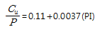
이다. 다음 그림에서 정규압밀점토의 두께는 15m, 소성지수(PI)가 40%일 때 점토층의 중간 깊이에서 비배수 점착력은?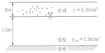
- 3.48
- 3.13
- 2.65
- 2.27
(정답률: 35%)
74. 침투유량(q) 및 B점에서의 간극수압(uB)을 구한 값으로 옳은 것은?(단, 투수층의 투수 계수는 3×10-1cm/sec이다.)
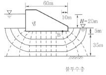
- q=100cm3/sec/cm, uB=0.5kg/cm2
- q=100cm3/sec/cm, uB=1.0kg/cm2
- q=200cm3/sec/cm, uB=0.5kg/cm2
- q=200cm3/sec/cm, uB=1.0kg/cm2
(정답률: 40%)
75. 5m×10m의 장방형 기초위에 q=6t/m2의 등분포 하중이 작용할 때, 지표면 아래 10m에서의 수직응력을 2:1법으로 구한 값은?
- 1.0t/m2
- 2.0t/m2
- 3.0t/m2
- 4.0t/m2
(정답률: 28%)
76. 기초의 크기가 25m×25m인 강성기초로 된 구조물이 있다. 이 구조물의 허용각변위(angular distortion)가 1/500이라고 할 때. 최대허용 부등침하량은?
- 2cm
- 2.5cm
- 4cm
- 5cm
(정답률: 31%)
77. 샘플러(sampler)의 외경이 6cm, 내경이 5.5cm일 때, 면적비()는?76
- 8.3%
- 9.0%
- 16%
- 19%
(정답률: 48%)
78. 단면적 100cm2, 길이 30cm인 모래 시료에 대한 정수두 투수시험결과가 다음의 표와 같을 때 이 흙의 투수계수는?71
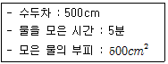
- 0.001cm/sec
- 0.0⑤cm/sec
- 0.01cm/sec
- 0.⑤cm/sec
(정답률: 35%)
79. rt=1.9t/m3, ø=30°인 뒤채움 모래를 이용하여 8m 높이의 보강토 옹벽을 설치하고자 한다. 폭 75mm, 두께 3.69mm의 보강띠를 연직방향 설치간격 Sv=0.5m, 수평방향 설치간격 Sh=1.0m로 시공하고자 할 때, 보강띠에 작용하는 최대힘 Tmax의 크기를 계산하면?68
- 1.53t
- 2.53t
- 2.40t
- 4.53t
(정답률: 13%)
80. 포화된 지반의 간극비를 , 함수비를 , 간극률을 , 비중을 라 할 때 다음 중 한계동수경사를 나타내는 식으로 적절한 것은?77
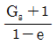
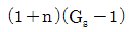
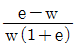
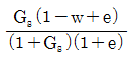
(정답률: 50%)
시멘트는 냉각되지 않도록 하고, 사용시 직접 가열하여 온도 저하를 방지하는 것이 좋은 이유는 시멘트가 냉각되면 화학적 반응이 느려져서 강도가 낮아지기 때문이다. 따라서 시멘트는 온도 저하를 방지하기 위해 보관할 때 냉각되지 않도록 하고, 사용할 때는 가열하여 온도를 유지시켜야 한다.